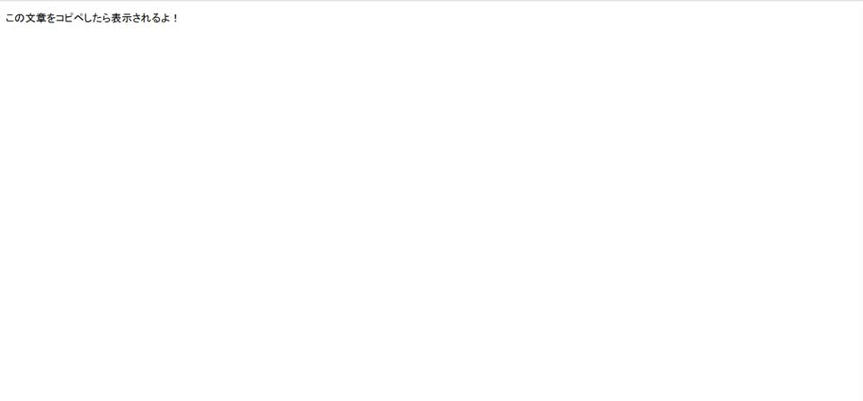
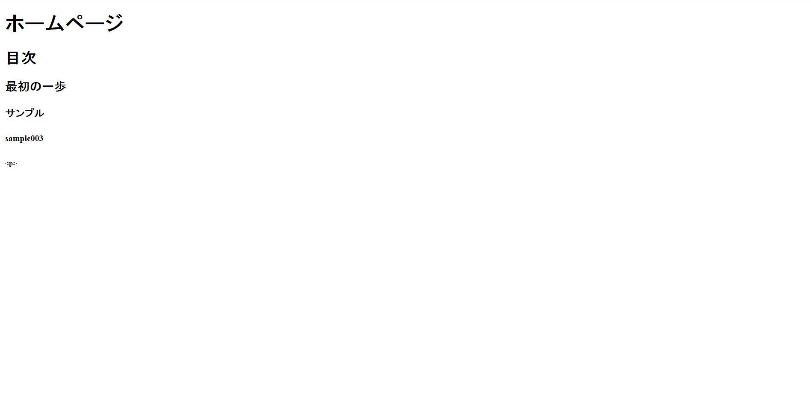
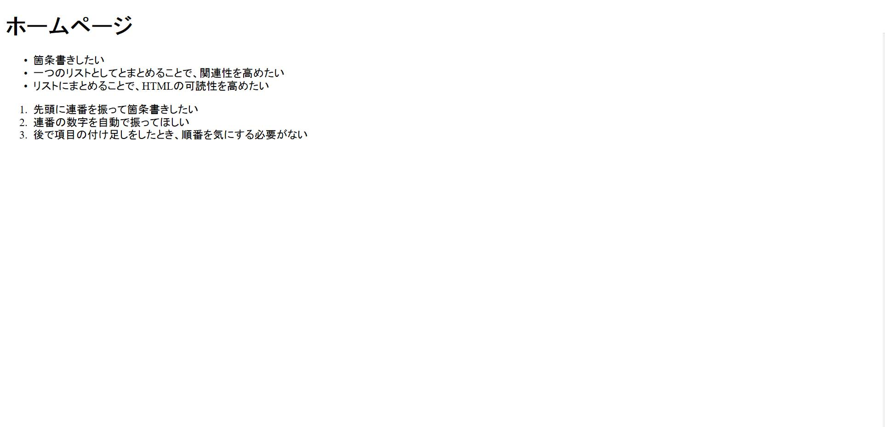
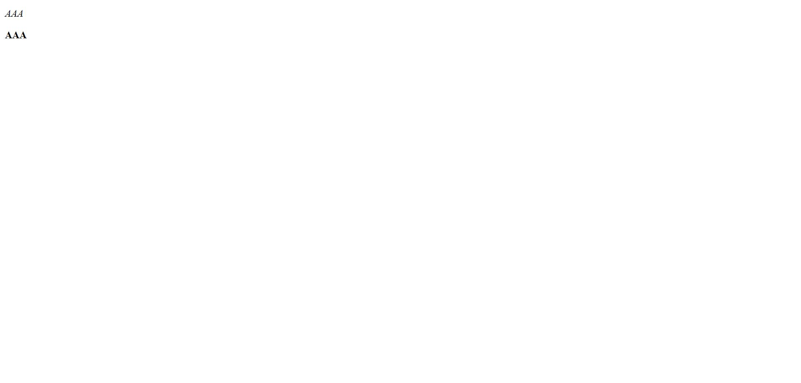
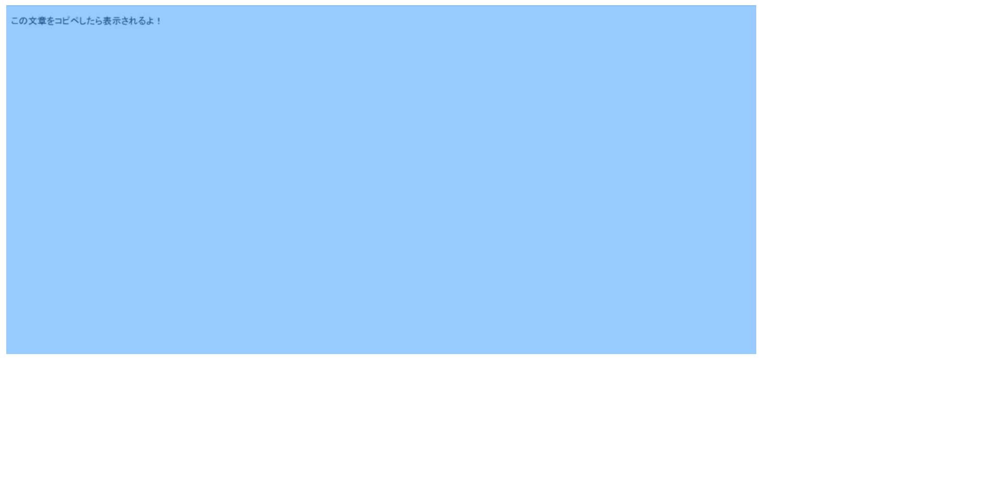
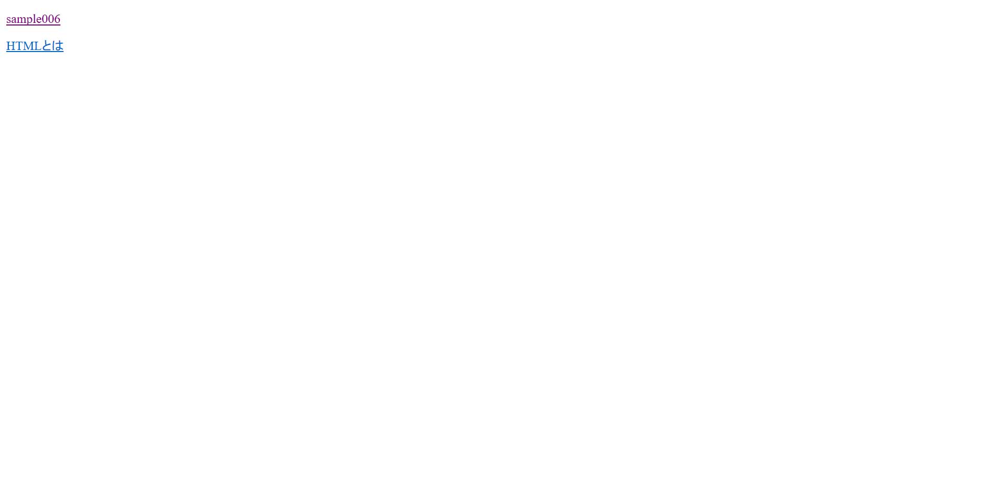

現状説明
私は現在、HTMLの学習をしています。
このサイト作成の経緯や目的を下記に記します。
- <webアプリケーション>が作りたい！
- <javasqript>や<PHP>を使用してみたい！
- それらを作成するには<HTML>や<CSS>が出来ない事には始まらない！
- だったら学習がてら、忘れないように学習サイトも作ってしまえ！
目次
- 最初の一歩
- タイトルの設定
- サブタイトルの表示
- リストの表示
- 強調表示
- 画像の表示
- ハイパーリンク
- 作者情報の表示
- CSSの書き方、呼び出し方
- CSSで使う定番
- CSSのよく使う設定一覧
- このサイトに使われている技
1.最初の一歩
とりあえず難しい事は考えずに、基本の文を書いてみましょう。
ブラウザで実行してみましょう。以下の様に表示されるかと思います。
基本の文が書ければ、後は自分の好きなように少しずつ改造していくだけです。
このサイト解説の前提となる用語も紹介しておきます。
先ほど書いた.html形式のファイルをHTMLファイル、HTMLの見た目をいい感じ装飾するために使われる.css形式のcssファイルが存在します。
HTMLの中に出てくる<>で囲まれた命令をタグといいます。命令タグによってそれぞれの効果があり、それらを適切に組み合わせていくことでHTMLを記述します。
今回のHTMLに登場したpタグは、文字列を表示して改行という意味です。一つのタグの中であれば改行されません。
2.タイトルの設定
ここからは前章で書いたプログラムより、詳しく設定していきます。
ブラウザのタブに表示される、タイトルの設定をしてみましょう。
上記の様に、titleタグで囲まれた部分がタイトルとして表示されます。
3.サブタイトルの表示
太文字、大文字のサブタイトルを表示する方法を説明します。
HTMLにはサブタイトルを表示するためのタグが存在します。それらのタグはh1タグ～h6タグまで存在し、数値が小さいほど文字サイズも小さくなっていきます。
ブラウザで実行してみましょう。以下の様に表示されるかと思います。
4.リストの表示
サイトを作っていると、要素の箇条書きだったり、先頭に番号を振った目次のようなものを作りたい時がります。
そんな時、pタグを使って1行ずつ書いていくと面倒だったり、後からHTMLを読んだときにパッと見で関連する項目が分かりずらかったりします。そんな時に使用すると便利なタグを紹介します。
ブラウザで実行してみましょう。以下の様に表示されるかと思います。
HTMLのリストタグには2種類あります。一つ目は項目の先頭に・が表示されるul(UnordredList)。
二つ目は項目の先頭に連番の数字が表示されるol(OrdredList)です。
この二つのリストはol、ulのタグで囲んだ後、中にliタグを増やすことにより項目が増えていきます。
olリストは追加した分だけ勝手に数字が振られるので、項目の増減、入れ替えによる数字の順番の変化を気にしなくても大丈夫です。
しかし開始の数字は1からになっています。開始の数字を変更したい場合もあるでしょう。そんなときのためにタグに情報を追加することもできます。
<ol>を<ol start="3">に変更してみてください。リストの数字が3から始まると思います。このようにstart=""の中に好きな数字をい入力すればその数字からリストを開始することが可能です。
5.強調表示
表示される文章の中で重要な部分を強調して表示したい時に使える設定を紹介します。
ここで紹介するタグは2つです。それぞれ斜体表示と太字表示です。
ブラウザで実行してみましょう。以下の様に表示されるかと思います。
一つ目のタグはemタグで囲んだ要素を斜体表示します。
二つ目のタグはstrongタグで囲んだ要素を太字表示します。
これら二つのタグはインライン要素と呼び、改行などの効力を持たずそのまま表示されます。基本的にはpタグ等のブロック要素で囲んで扱うことが多いです。
ちなみに2つのタグを重ねることによって、太字の斜体も表現することができます。
6.画像の表示
このサイトもそうですが、画像を表示したいことは多々あるでしょう。さっそく紹介していきます。
画像の表示にはimgタグを使い、srcで自分自身(HTML)から画像に対するパスを入力することで画像を表示できます。上のHTMLでは自身からのパスを設定しているので、皆さん自身の画像のパスに書き換えてから実行してください。ここではパスの書き方については説明しません。(相対パスの書き方で調べてください)
ブラウザを実行してみましょう。以下のように表示されるかと思います。
どこまでが画像なのか判り難かったため選択して範囲を分かりやすくしています。
1章で表示されていた画像を使用したため、同じ画像が表示されていると思います。
気を付けなければならないのは、imgタグが閉じる必要がないことです。それ一つで効力を持つタグです。
7.ハイパーリンク
サイトを見ていると、クリックすると外部のサイトに飛ばされたり、次のページに飛んだりすることがあると思います。
ここでは指定URLや指定のページに飛ぶ方法を紹介します。
ハイパーリンクの設定にはaタグを使い、hrefでそのページへのURLやパスを入力します。上のHTMLでは、一つ目のaタグに自分のファイルに対するパスを指定していますので、皆さん自身のファイルのパスに書き換えてから実行してください。
画像のsample006の文字色が変わっているのは、一度クリックしたからですので気にしない絵ください。(cookieの情報)
aタグはインライン要素なので改行などはされません。ですので、pタグ等で囲んでやることで改行させます。
プログラムの一つ目のaタグでは同じフォルダに入っているHTMLファイルにアクセスしています。
二つ目のaタグでは外部のURLにアクセスしています。
ファイルのアクセスには絶対パスを使うこともできますが、保守性の面から相対パスを私用すべきです。
8.作者情報の表示
ここでは作者情報やサイトの情報等の一番下や一番上に記述したい情報を、HTMLから見て関連が分かりやすいように記述する方法を紹介します。(使わずとも問題はありませんが、分かりやすくするためのものです)